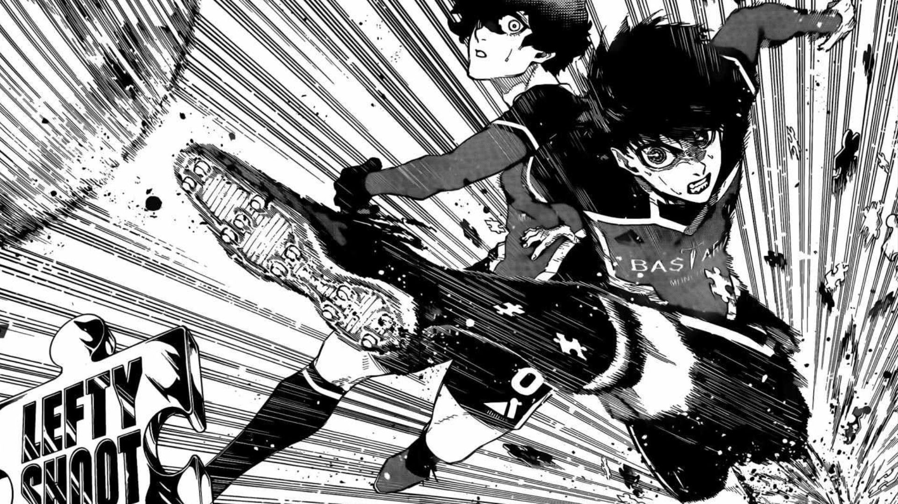
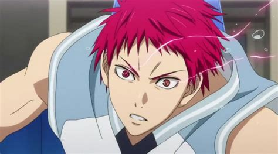

MOI, Tom Nicoulin
Informaticien
Mes Passions
Je suis fan de manga et d'animé comme Blue Lock, My Hero academia, Kuroko no basket, Tokyo Renvenger, Seven Deadly Sins, One Punch Man, Spy x Family, Death Note, Cyperpunk Edgerunner, Vinland Saga, Slam Dunk, Naruto. J'aime aussi beaucoup le sport. J'aime joué au basketball, au unihockey, au football et j'aime aussi faire du ski. Pour terminer, j'adore me pauser ou m'arrêter devant les beaux paysages comme la montagne le soir.
Mes Experiences Professionnelles
Je suis allé travailler à Zurich pendant 3 ans pour les CFF puis j'ai pris l'avion pour New York où je travaillais pour un prestigieux cabinets d'avocats. Pendant 5 années j'ai renforcé leur sécurité. J'ai aussi profité de créer Spotifi. Et durant ces 7 ans restantes je suis rentré en Suisse et je travail actuellement pour la conféderation hélevetique
Mes Compétences Professionnel
- C++, J'ai réussi le 319
- Spider-Man, J'ai terminé 4 fois le jeu et en incroyable
- Overwatch 2,j'étais gold 2
- Peut mettre un poste de travail en état avec son système d'exploitation, j'ai réussi le module 187
Ma formation
- J'ai fini mon école obligatiore en 2023 à Porrentruy ayant passé par L'école primaire de L'Oiselier et le collège Stockmar de Porrentruy
- Dès la fin de mon école obligatoire, j'ai fait une formation d'information à l'Ecole des Métiers Techniques de Porrentruy